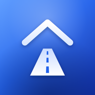

HomeWay
Đi chung xe · Tìm người giúp việc gần nhà
Miễn phí
- Tìm chuyến tiện đường, đặt ghế và hẹn điểm đón
- Tài xế đăng chuyến, nhận khách cùng đường
- Đặt vé nhà xe theo tuyến
- Tìm việc nhà theo giờ hoặc người giúp việc gần bạn

Đi chung xe · Tìm người giúp việc gần nhà
Miễn phí